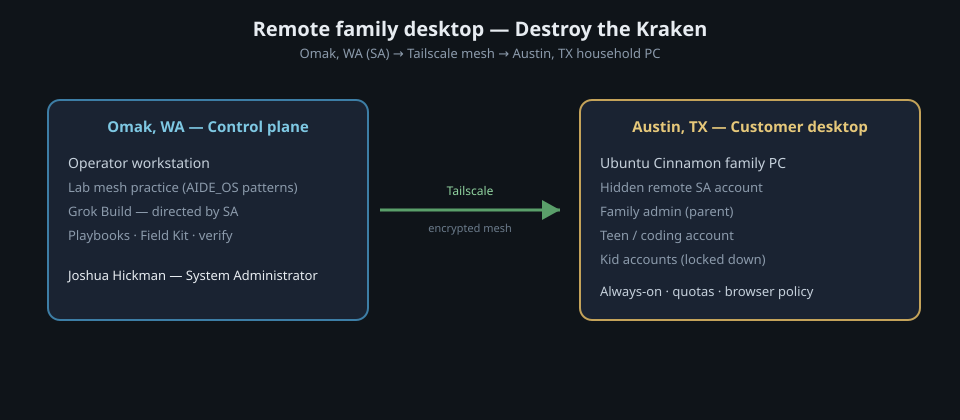
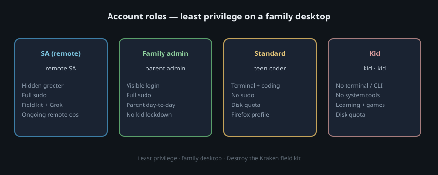

Field notes · August 2026
Remote family desktop provisioning
Omak, Washington → Austin, Texas over Tailscale. A full Ubuntu Cinnamon household PC, set up like a real field job — not a weekend experiment.
How I work (and how I use Grok)
I don’t sell theater. I sell systems that stay up and stay understandable.
This engagement was personal (family), but I ran it like any client job: scope, access path, baseline, change control, handoff. I used the stack I already trust for real work — encrypted mesh access, my control-plane workstation, and Grok Build as an on-box research and scripting partner under my direction.
I’m still the system administrator. Grok doesn’t own the keyboard; I do. It speeds research, scripting, and verification. I decide what runs on a living family PC.
What I delivered
A freshly installed Ubuntu Cinnamon home desktop in Austin, Texas, provisioned fully remote from Omak, Washington. It became a durable multi-user family machine: always-on behavior, educational and lightweight game software, age-appropriate accounts, disk quotas, careful browser defaults, and a hidden remote support path for ongoing help.
- Family admin for day-to-day parent use
- Teen / coding account with terminal tools and Python-friendly apps
- Kid accounts with lockdown and quotas (fewer footguns)
- Remote SA account for support — not on the greeter for casual login
- Clean handoff: family desktops free of setup residue; field kit kept for the SA only
How I got there
Secure mesh path from my Omak control plane into the Austin household host. On the box I worked as a dedicated remote SA account, with Grok co-located for research and scripts — every privileged step approved and run by me.


Why this matters
This is the boring, valuable work junior sysadmin and T1–T2 roles should be able to show:
- Remote access design — who is admin, who is not, mesh identity without open-WAN surprises
- Linux multi-user desktops — accounts, quotas, group-based lockdown
- Change with evidence — scripts, verify steps, honest limits
- AI-assisted ops without abdication — Grok drafts; I direct and own the blast radius
- Handoff — customer-facing cleanliness vs internal field kit for the next site
Honest limits
- Some browser bookmark automation had to finish on first GUI login (snap/headless limits)
- Kid lockdown reduces menu and terminal footguns; it is not a full sandbox VM
- This household is family; process was still run as a full client-style engagement for training and field-kit reuse
Validation
Remote review from the control plane (SSH as remote SA) plus on-box checks confirmed quotas in force for the kids and coding account,
SystemAccount=true for the hidden SA (not on the greeter face list), Cinnamon desktop, Tailscale mesh, and a clean family handoff.
Customer testimony
A short form has been offered to the household contact. Public quote will appear here only with their OK (first name + region is fine).
Testimony pending.
Service lines this maps to
- PC repairs & upgrades
- Ubuntu Cinnamon family desktop
- Home computing consultation
- Sovereign home cloud (path for files/media on gear they own)
- Consulting and tech support (ongoing remote assist for the family admin)
I work local-first in Okanogan County. Custom field kits plus on-site or remote troubleshooting mean I can still deliver disciplined support across distance when the mesh path is solid — and bring that same kit to neighbors at home.
Related services
- PC setup & network triage
- Files & backups / private starter setups
- AIDE_OS lab — where I practice patterns first